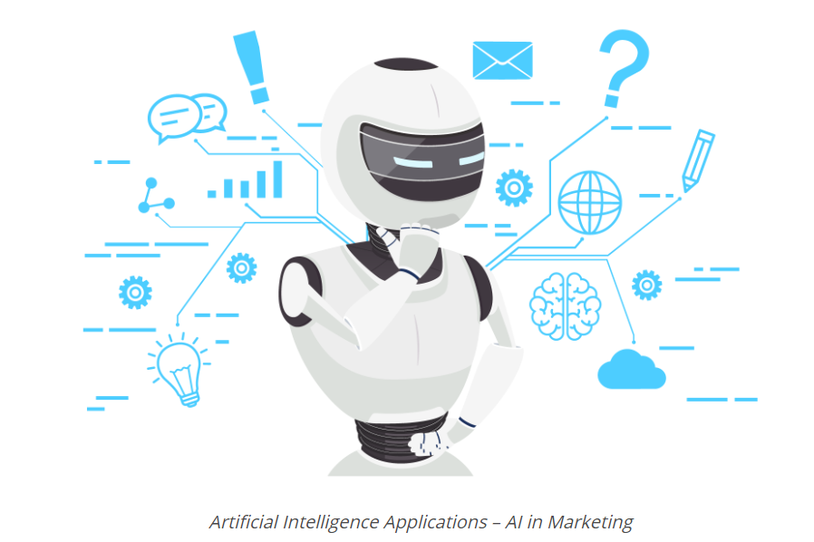
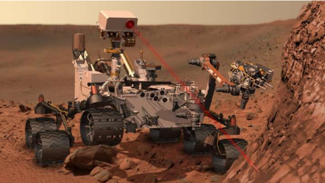

There are so many applicaitons of artificial intelligence in different fields of life. And now, let's talk about some of these applications.
1.Artificial Intelligence in Marketing: Humans are good at sugar coating, but if a bot is built for the purpose of marketing a brand will be more effecient. An example of this, finding the right movies on Netflix or the required product on amazon.

2.Artificial Intelligence in Banking: AI in banking is now increasing! So many banks adopted AI-based systems to support customers. An example for this, HDFC Bank.
3.Artificial Intelligence in Finance: Ventures are relying on computers and data scientists to predict future patterns in the market because it depends on the ability to predict the future.
4.Artificial Intelligence in Space Exploration: Artificial Intelligence and machine learning both are the best way to get a big amounts of data. It is also used for NASA's next mission to Mars 2020 Rover. The AEGIS, which is AI-based Mars rover is already on the red planet.
